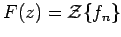
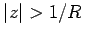

Inhalt Index DeskTop Bronstein

 Integraltransformationen Z-Transformation Eigenschaften der Z-Transformation
Integraltransformationen Z-Transformation Eigenschaften der Z-Transformation


Für die Anwendung der Z-Transformation ist es wichtig zu wissen, wie sich gewisse Operationen an den Originalfolgen in entsprechenden Operationen an den Bildfunktionen widerspiegeln und umgekehrt. Im folgenden sei  für .
| (15.117) |
dabei wird fn-k = 0 für n - k < 0 festgelegt.
| (15.119) |
| (15.120) |
gilt die Regel:
| = | |||
| = | |||
| (15.121) | |||
| = |
| (15.122) |
| (15.123) |
Existieren die Z-Transformierten  für und für , dann gilt
für und für , dann gilt
für . Die Beziehung (15.124) wird auch als Faltungssatz der Z-Transformation bezeichnet. Er entspricht der Vorschrift für die Multiplikation zweier Potenzreihen.
Durch wiederholte Anwendung von (15.125) lassen sich auch Ableitungen höherer Ordnung von F(z) bestimmen.
| (15.126) |